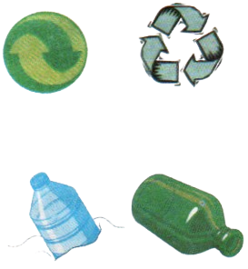

Solul. Poluarea solului
Caracteristici generale ale solului
Solul este un sistem complex, organo-mineral, aflat la partea superioară a litosferei. În componența acestuia intră:
• Substanțe minerale (roci);
• Substanțe organice, provenite din resturi vegetale și animale descompuse (humus);
• Apă provenită din precipitații;
• Aer, important pentru respirația rădăcinilor;
Substanțele organice sunt descompuse și transformate în substanțe anorganice (mineralizate), de obicei în prezența unor biocatalizatori (enzime). În acest fel se asigură închiderea circuitului biologic pentru elementele indispensabile vieții (C, H, O, N, S, P, K, Mg etc.) și formarea humusului. De asemenea, se află și compuși minerali ai solului, gaze (CO₂, N₂, CH₄) și enzimi.
Așadar, în sol se petrece:
• Procese de degradare;
• Procese de sinteză a materiei specifice;
Viața pe Pământ este asigurată numai dacă materia vie se reciclează. Prin contrast, dezvoltarea economică are o evoluție ascendentă, amenințând aceste cicluri.
Caracteristici generale ale solului
•Pulberilor cosmice
•Corodării eoliene și produse de apă
•Erupții vulcanice
•Reziduuri vegetale și animale
•Incendii spontane, provocate de temperaturi atmosferice ridicate
Poluarea chimică a solului
Ploile acide curăță solul de elemente nutritive (K, Ca, Mg) și eliberează aluminiul din sărurile minerale. Aluminiul substituie calciul, ceea ce duce la încetinirea ritmului de creștere a arborilor.
Deșeurile industriale și menajere afectează solul prin acumulări de metale grele (Pb, Cd, Cr, Cu, Zn, Ni), coloranți, solvenți, materie organică rezultată din industria alimentară.
E bine să știi!!
• Mercurul, compușii acestuia, acumulatorii cu Pb și multe alte substanțe nu pot fi transformați pe cale naturală în produși metodici.

• Acest simbol ecologic (Der Grüne Punkt) aplicat pe ambalajul unor produse sugerează că firma producătoare colaborează cu o alta, care se ocupă de recuperarea și reciclarea ambalajelor.
• Reziduurile alimentare, hârtia și lemnul se degradează în aproximativ 6 luni, obiectele metalice în 10 ani, iar cele din material plastic în sute de ani.
• Prin consumarea legumelor de pe terenuri tratate cu îngrășăminte chimice, azotul este transformat în organism în azotați, dereglând respirația intracelulară, provocând anemii și diferite forme de cancer
• Folosirea pesticidelor are ca consecință acumularea lor în alimente.
• În vederea recuperării, sticla se colectează în containere speciale, se sfarmă, se curăță și se retopește. Deși recipienții de sticlă se pot refolosi în medie de 25-30 de ori înainte de a se sparge, practica refolosirii recipienților este în continuă scădere.
•Se apreciază că aproximativ 40% din producția de fier provine din recuperarea fierului vechi.
•Deși aluminiul este un metal foarte răspândit în natură (aproxi ativ 8% din scoarța terestră), obținerea lui este dificilă și presupune un mare consum de energie. Dar consumul de energie este de 5-10 ori mai mic în cazul reciclării, în America de recuperează peste 60% din ambalajele de aluminiu, iar în Europa doar 20%.
•Hârtia recuperată și reciclată salvează pădurile. Pentru a produce o tonă de hârtie trebuie sacrificați 17 arbori maturi.

În România, reciclarea deșeurilor este încă la început de drum, un factor fiind educația necorespunzătoare. În prezent, se reciclează deșeuri de metale feroase și neferoase, hârtie, lemn, cauciucuri uzate și deșeuri de mase plastice.
În țările dezvoltate, deșeurile sunt sortate și reciclate. Se recuperează sticla, metalele, hârtia și altele.
Apele menajere și deșeurile agricole, infiltrându-se în pământ, constituie o sursă importantă de boli și infecții.
Chimizarea în exces a agriculturii, prin folosirea de îngrășăminte chimice și pesticide, duce la acumularea acestor substanțe în sol, de unde ajung și în apa freatică. Folosirea îndelungată a îngrășămintelor chimice provoacă acumularea unor cantități mari de azot anorganic și dereglări în activitatea microorganismelor fixatoare de azot din atmosferă.
Pesticidele ajunse în sol acționează din păcate nu numai împotriva dăunătorilor, ci și împotriva întregii faune care contribuie la incorporarea materiei organice din sol. Mulți dăunători devin rezistenți ducând la tendința de creștere a cantității de pesticid.
Așa se ajunge la pătrunderea pesticidelor în lanțurile trofice:
Despăduririle
Pădurile acopereau acum 100 de ani aproximativ 30% din suprafața uscatului, acum, acest procent este în continuă scădere.
Pădurea, în afara funcției sale productive, are și o mare valoare ecologică: purifică aerul.
Pădurile pot fi distruse:
• Prin defrișări;
• În urma ploilor acide;
• În urma unor incendii;
Reîmpădurirea unui teren durează între 50 și 100 de ani și este un proces foarte costisitor. De aceea, tăierea copacilor trebuie făcută cu un maxim discernământ.
Test
Lecția anterioară Următoarea lecție